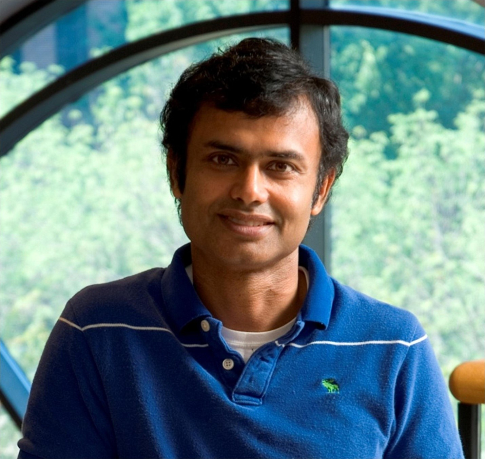

|
Supported by:

|
Keynote Speeches
- July 27, 20:10-21:10: Professor Kaushik Roy on "Resistive Crossbars as Matrix-Vector Multiplication Engine for Machine Learning Applications: Opportunities and Challenges"
- July 28, 20:10-21:10: Professor Shaojun Wei on "Software-defined AI Chip - from the perspective of Architecture Innovation"
Speaker: Professor Kaushik Roy, Purdue University

Title: Resistive Crossbars as Matrix-Vector Multiplication Engine for Machine Learning Applications: Opportunities and Challenges
Abstract:
Traditional computing systems based on von Neumann architectures are fundamentally bottle-necked by the transfer speeds between memory and processor. With growing computational needs of today’s application space, dominated by Machine Learning (ML) workloads, there is a need to design special purpose computing systems operating on the principle of co-located memory and processing units. Such an approach, commonly known as ‘In-memory computing’, can potentially eliminate expensive data movement costs by computing inside the memory array itself. To that effect, crossbars based on resistive switching Non-Volatile Memory (NVM) devices has shown immense promise in serving as the building blocks of in-memory computing systems, as their high storage density can overcome scaling challenges that plague CMOS technology today. Adding to that, the ability of resistive crossbars to accelerate the main computational kernel of ML workloads by performing massively parallel, in-situ matrix vector multiplication (MVM) operations, makes them a promising candidate for building area and energy-efficient systems. However, the analog computing nature in resistive crossbars introduce approximations in MVM computations due to device and circuit level nonidealities. Further, analog systems pose high cost peripheral circuit requirements for conversions between the analog and digital domain. Thus, there is a need to understand the entire system design stack, from device characteristics to architectures, and perform effective hardware-software co-design to truly realize the potential of resistive crossbars as future computing systems. In this talk, we will present a comprehensive overview of NVM crossbars for accelerating ML workloads. We describe, in detail, the design principles of the basic building blocks, such as the device and associated circuits, that constitute the crossbars. We explore non-idealities arising from the device characteristics and circuit behavior and study their impact on MVM functionality of NVM crossbars for machine learning hardware.
Biography:
Kaushik Roy received B.Tech. degree in electronics and electrical communications engineering from the Indian Institute of Technology, Kharagpur, India, and Ph.D. degree from the electrical and computer engineering department of the University of Illinois at Urbana-Champaign in 1990. He was with the Semiconductor Process and Design Center of Texas Instruments, Dallas, where he worked on FPGA architecture development and low-power circuit design. He joined the electrical and computer engineering faculty at Purdue University, West Lafayette, IN, in 1993, where he is currently Edward G. Tiedemann Jr. Distinguished Professor. He also the director of the center for brain-inspired computing (C-BRIC) funded by SRC/DARPA. His research interests include neuromorphic and emerging computing models, neuro-mimetic devices, spintronics, device-circuit-algorithm co-design for nano-scale Silicon and non-Silicon technologies, and low-power electronics. Dr. Roy has published more than 700 papers in refereed journals and conferences, holds 18 patents, supervised 85 PhD dissertations, and is co-author of two books on Low Power CMOS VLSI Design (John Wiley & McGraw Hill).
Dr. Roy received the National Science Foundation Career Development Award in 1995, IBM faculty partnership award, ATT/Lucent Foundation award, 2005 SRC Technical Excellence Award, SRC Inventors Award, Purdue College of Engineering Research Excellence Award, Humboldt Research Award in 2010, 2010 IEEE Circuits and Systems Society Technical Achievement Award (Charles Desoer Award), Distinguished Alumnus Award from Indian Institute of Technology (IIT), Kharagpur, Fulbright-Nehru Distinguished Chair, DoD Vannevar Bush Faculty Fellow (2014-2019), Semiconductor Research Corporation Aristotle award in 2015, and best paper awards at 1997 International Test Conference, IEEE 2000 International Symposium on Quality of IC Design, 2003 IEEE Latin American Test Workshop, 2003 IEEE Nano, 2004 IEEE International Conference on Computer Design, 2006 IEEE/ACM International Symposium on Low Power Electronics & Design, and 2005 IEEE Circuits and system society Outstanding Young Author Award (Chris Kim), 2006 IEEE Transactions on VLSI Systems best paper award, 2012 ACM/IEEE International Symposium on Low Power Electronics and Design best paper award, 2013 IEEE Transactions on VLSI Best paper award. Dr. Roy was a Purdue University Faculty Scholar (1998-2003). He was a Research Visionary Board Member of Motorola Labs (2002) and held the M. Gandhi Distinguished Visiting faculty at Indian Institute of Technology (Bombay) and Global Foundries visiting Chair at National University of Singapore. He has been in the editorial board of IEEE Design and Test, IEEE Transactions on Circuits and Systems, IEEE Transactions on VLSI Systems, and IEEE Transactions on Electron Devices. He was Guest Editor for Special Issue on Low-Power VLSI in the IEEE Design and Test (1994) and IEEE Transactions on VLSI Systems (June 2000), IEE Proceedings -- Computers and Digital Techniques (July 2002), and IEEE Journal on Emerging and Selected Topics in Circuits and Systems (2011). Dr. Roy is a fellow of IEEE.
Speaker: Professor Shaojun Wei, Tsinghua University
Title: Software-defined AI Chip - from the perspective of Architecture Innovation
Abstract:
Over the past three decades, Application Specific Integrated Circuit (ASIC) is employed to meet specific system requirements. A wide variety and small size are the advantages of ASIC. However, the diversity of applications contradicts the high investment in ASIC R&D with the process technology going to 1Xnm. To realize an ASIC corresponding to the application in a low-cost way, a hardware scheme with the same topology as the C/C++ description should be the most direct implementation and the most efficient as well. Reconfigurable chip is both software and hardware programable. The hardware architecture and functions change dynamically in real-time with the change of software algorithm while ensuring flexibility. Thus it is also called a software-defined chip. The wide adaptability of the software-defined chip makes it a strong competitor to replace ASIC, FPGA, and general-purpose processors.
Artificial intelligence (AI) is ubiquitous and AI chip has become a research hotspot in recent years. AI algorithms vary in different applications and the algorithms will continue to evolve. AI services are migrating from the cloud to the edge nowadays. Performance demands and power consumption constraints require AI to deployed on an energy-efficient computing engine. Reconfigurable architecture is the ideal solution for intelligent computing since its programmability and dynamic reconfigurability of architecture can adapt algorithm evolution and diversity of applications and greatly improves energy efficiency as well.
Dynamically reconfigurable technology brings the ability to bear the diversity and evolution of AI algorithms. Software-defined AI chips are expected to provide a new route for China's chip technology to get rid of imitation.
Biography:
Dr. Shaojun Wei graduated from the Department of Radio & Electronics of Tsinghua University, China, in 1984 and received his Master degree in engineering. He received his Doctor degree in Applied Science from the Faculté Polytechnique de Mons (FPMs), Belgium, in 1991.
Dr. Shaojun Wei is now the professor of Tsinghua University; Chief Scientist of the State Key Science and Technology Project; Member of the National Integrated Circuit Industry Development Advisory Committee; Vice President of China Semiconductor Industry Association (CSIA) and President of Fabless Chapter CSIA. Dr. Wei was the President & CEO of Datang Telecom Technology Co., Ltd. and the CTO of Datang Telecom Industry Group between 2001-2006.
Dr. Wei has been working on VLSI design methodologies research and reconfigurable computing technology research. He has published more than 200 peer-reviewed papers and 6 monographs. He owns more than 110 patents including 14 US patents. Dr. Wei is the Fellow of Chinese Institute of Electronics (CIE) and the IEEE Fellow.
Dr. Wei had won many awards including China National Second Award for Technology Invention (2015), China National Second Award for Technology Progress (2001), SIPO & WIPO Patent Golden Award (2003, 2015), First Award for Science and Technology of Ministry of Education (2014, 2019), China, First Award for Technology Invention of CIE (2012, 2017), EETimes China IC Design Achievement Award (2018), Aspencore Outstanding Contribution Award of the Year/Global Electronic Achievement Awards (2018) and SEMI Special Contribution Award (2019) and etc. He was selected to be the recipient of the 2020 IEEE CAS Industrial Pioneer Award.